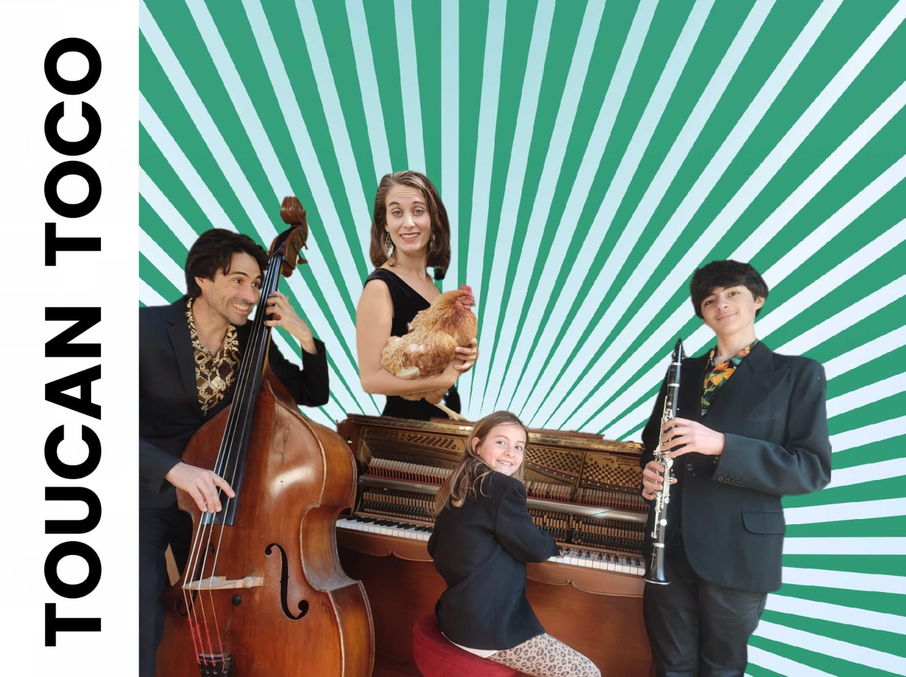

Quartet · Familial
Quartet familial avec piano, contrebasse, batterie, flûte traversière, clarinette et chant — avec un répertoire inspiré des musiques d'Amérique latine.
Valses vénézuéliennes, cumbia colombienne, son cubain, salsa, bossa nova, samba, choros brésiliens… Tout le monde joue de tout et réciproquement, l'ensemble est joyeux et étonnant, et le spectacle s'ajoute à la musique !
Dans cette formule unique, Zéphyr et Cosima Ollivier complètent le groupe aux côtés de Gwen et d'une contrebassiste. L'ensemble change de nom, devient Toucan Toco, et tout est possible.
